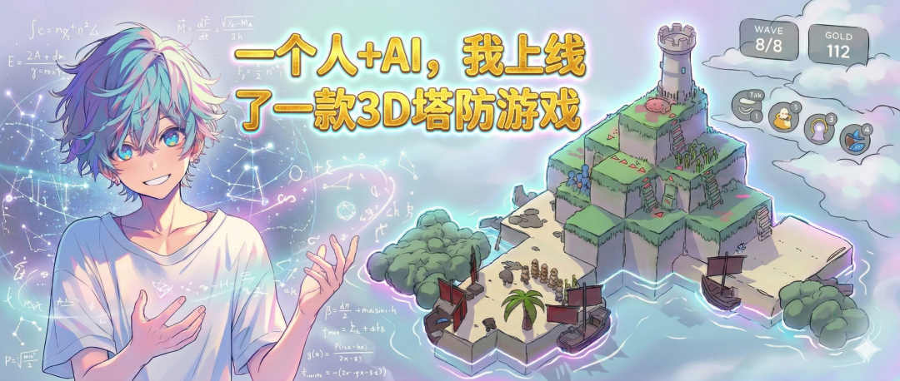

Building the Next Generation of Games with AI
我把 AI x 游戏的发展看作三个阶段的逐步演进，每个阶段都有自己的发展过程和机会窗口。
这不是预测，而是正在发生的事，未来已来。
The Three Stages of AI x Game
从生产工具到世界本身的演进路径
美术效率得到大幅提升，且门槛大幅降低
提高原有游戏生产管线环节效率
① 图像生成成熟
Midjourney / Stable Diffusion
任何人通过自然语言产出高质量图片
智能普及，催生角色对话与文字游戏品类
AI开始影响局部游戏玩法
② 大语言模型出世
ChatGPT / DeepSeek
真正的智能开始普及，chat类产品火爆
BGM 与音效制作平民化
提高原有游戏生产管线环节效率
③ 音频生成成熟
Suno / ElevenLabs
任何人通过自然语言产出 BGM 与音效
代码门槛消失，非技术背景也能驱动程序
部分原生AI游戏出现
④ 编程能力跨过门槛
Claude Code / Cursor
普通人也能让开发应用程序
AI开始拥有审美，实现All-in-Code闭环
普通人也可以做出精美游戏
⑤LLM 拥有审美
Gemini 3 Pro / Nano Banana
AI开始具备审美和极强的多模态理解能力
经验封装为产品，小白可交付专业级游戏
人人都是游戏制作人
⑥Agent框架兴起
LangGraph / OpenClaw
智能体Agent诞生。标志 Stage 1 闭环。
AI 作为游戏的主要玩法
AI 不再是提升效率的辅助，而是游戏体验的核心。
核心判别标准：把 AI 抽走，游戏还存不存在？
文字聊天与对话类
海龟汤、开放剧情推理、剧情向文字游戏等。玩法本身就是"和 AI 说话"。这是 Stage 2 中最早被玩家接受、也是目前应用最成熟的商业化方向。
情感陪伴AI游戏
基于大模型与极低延迟 TTS 构建的高实时交互。AI 能感知玩家行为并提供近乎真人的情绪陪伴价值。
互动影游 AI 补全
旨在替代高成本真人拍摄。通过 AI 预生成逻辑复杂的剧情分支与视频画面，让规模化制作高自由度互动影游成为可能。
AI 公寓 / 智能体行为自治
引入斯坦福小镇（Stanford Smallville）理念，赋予 NPC 完全的自主行为能力与记忆链。玩家与 NPC、NPC 之间皆可自由涌现交互。AI 的智能表现直接决定了游戏的核心趣味性。
实时视频流互动
游戏画面不再是预制资产，而是被玩家语言指令实时影响的视频流（如 Happy Horse）。彻底重构游戏呈现形式。
商业化落地阻碍
行业目前缺乏成熟的 AI 原生设计方法论。高频交互带来的 Token 成本居高不下，以及 TTS 等模态的延迟依然是硬伤。
+ MORE
Uncharted Territories...
AI 构成游戏世界本身
3D 世界底座 + AI UGC + Agent角色,探索 AIx游戏 的终极形态。
世界、角色、玩法由自然语言生成，角色有记忆、有目标，成为"真生命"。
游戏世界底座
为 AI 生成的内容、Agent 的行为提供运行的"地基"。必须能被随时改动、扩展、重塑，而非预制不变。
AI UGC
创作门槛归零。每一个用户都可以用自然语言，随心所欲地创造自己的角色、世界与游戏规则。
人与 Agent 共存
NPC 成为接入 Agent 的"真生命"。拥有记忆、目标，能与玩家及环境自由涌现出真实的行为与故事。
探索记录
Stage 3 还没成立，但我和伙伴们正在用行动让它一步一步成为现实
角色、动画、技能生成
创作"谁"：探索通过自然语言及 AI 算法，直接在引擎中生成具备骨骼动画与技能特效效果的可操作角色。
3D 高斯生成世界
创作"哪儿"：利用 3D Gaussian Splatting 技术，基于文本或图像快速生成高保真、可交互的三维游戏场景。
实时 AI 生成交互（web网页探索）
驱动"发生什么"：世界中的内容不是预设固定的，而是根据用户的即时输入或描述，实时发生演化与改变。
Agent 接入游戏环境
赋予"生命"：让搭载大语言模型的 Agent 在生成出来的物理世界中真正"生存"，与环境和玩家产生自发互动。
Selected Projects
把理论变为可玩的实体。
孤岛守护
The Island Guard
这是我证明"普通人 × AI 已经可以独立做出高完成度 3D 游戏"的第一个落地项目。 主动放弃成熟引擎，让游戏的一切all in code
末日狂飙：刀锋行者
Blade
Walker
这是我尝试的第二款纯代码生成游戏项目，通过画家算法实现2D伪3D的视觉效果，具有完整的商业闭环
2D伪3D
通过画家算法实现2D伪3D的视觉效果
打击感五件套
顿帧 + 随机震屏 + 3D投影粒子 + 伤害数字 + 红屏。工程化手感
极简工程纪律
GC 压力降至 1/5，自研对象池模式，中低端 Android 稳 60fps
完整商业闭环
9 种天赋组合、50 级武器强化系统与广告收益模块
实时情感陪伴游戏
Companion
AI
突破传统 AI 交互的“对话框”限制，打造一个能听、能看、能一起玩游戏、有温度的数字化生命。 AI 不再是冷冰冰的工具，而是能够产生真实情感共鸣的旅伴。
认知与连接
持续的输入、输出，并寻找志同道合的同行者。
AI 游戏制作交流群
我建立并维护的一个"AI x 游戏"垂类深度交流圈层。聚集了对 AI 游戏充满热情的开发者、技术专家、游戏厂商、独立游戏人，交流最新技术、开源项目与商业机会。
实战案例深度复盘
《一个人 + AI独立做出3D游戏的全过程》。详细复盘了从零完成开发的全过程，并提出了"为 AI 设计项目结构"的AI-native实战方法论。

个人公众号
记录关于 AI、游戏和产品的深度思考。不定期输出项目复盘、方法论沉淀与行业最前沿观察。
建立连接
我正在寻找 AI + 游戏方向的落地项目 合作。
如果你也在做改变行业的事情，欢迎联系我。